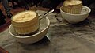
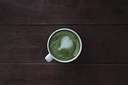
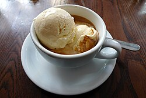

Kávékülönlegességek
Utazásaim során szeretem a helyi kávékat is megkostólni. Ezekből szedtem elő pár igazán finom, és számomra különleges kávét.
Kávé fajták:
- Vietnámi tojáskávé
- Japán macha latte
- Olasz jegeskávé
Képek
Vietnámi tojáskávé
Japán macha latte

Olasz jegeskávé
